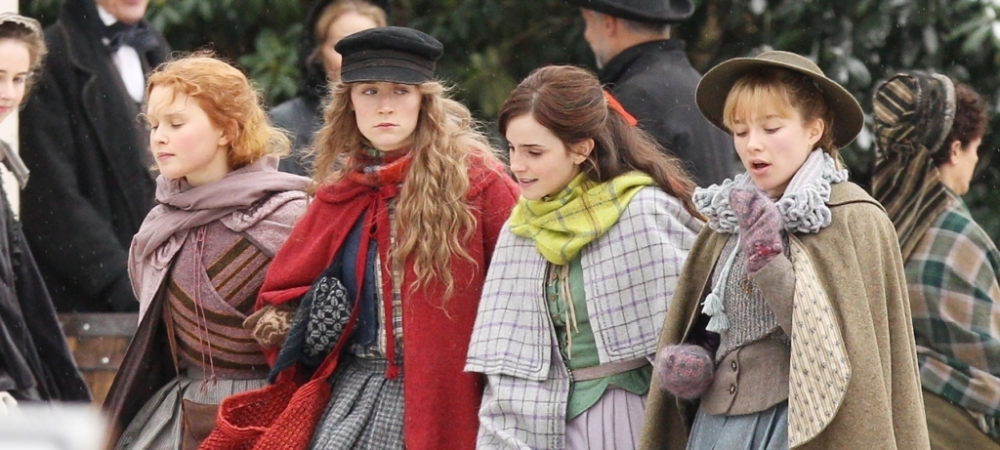
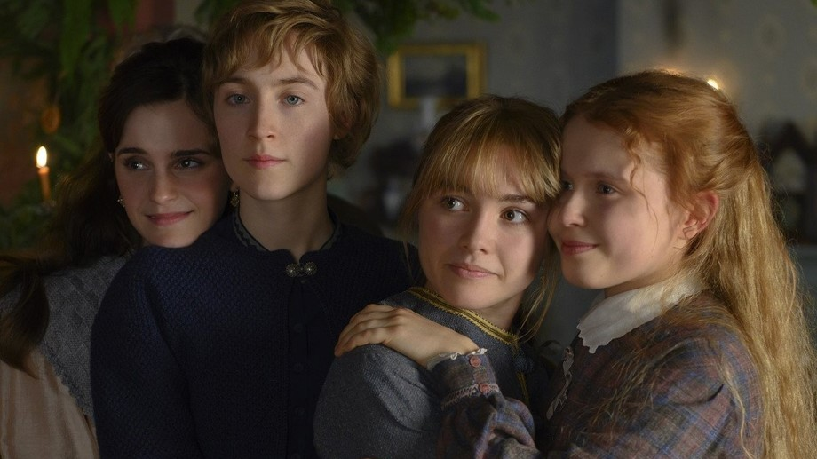
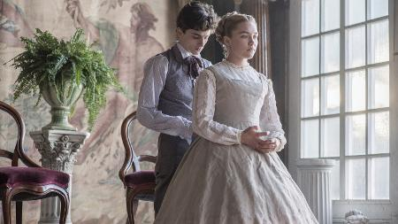

Greta Gerwig abre sua adaptação de Mulherzinhas, romance de Louisa May Alcott, da segunda metade do século 19, com uma citação da própria autora sobre contar histórias alegres. É como se a diretora achasse que deve justificar uma narrativa de aparente leveza, vinda de um outro momento do mundo. Talvez houvesse um receio que a docilidade que este Adoráveis Mulheres, soasse como algo distante das problemáticas do mundo contemporâneo, principalmente em relação a emancipações ligadas a gênero. Não é o caso desta versão de uma história já tão adaptada, mas que ganha agora uma condução cativante, perpassando por conflitos entre liberdade, amor romântico e arte.
Em uma estrutura cronológica permeada por flashbacks, acompanhamos a vida das quatro irmãs March: Jo (Saoirse Ronan), Amy (Florence Pugh), Meg (Emma Watson) e Beth (Eliza Scanlen), vivendo com a matriarca Marmee (Laura Dern) enquanto o pai está envolvido na Guerra Civil Norte-Americana. As quatro possuem aspirações artísticas, seja para a literatura, artes cênicas, pintura ou música. A vida vai passando, as pressões e os costumes vão moldando algumas dessas aspirações, tolhendo outras e o campo vai se estreitando para as definições de suas vidas adultas, enquanto precisam lidar uma difícil situação na rotina doméstica.
Com o afastamento de uma abordagem muito naturalista e um abraço ao tom terno da narrativa, o roteiro de Greta vai se debruçar sobre um jogo de concessões e desejos, assim como uma autoinvestigação de suas personagens sobre a sinceridade dessas duas instâncias. É no lidar com essas dúvidas, sobre as próprias capacidades, talentos, vontades e desígnios (vindos de si mesmas ou do mundo) em que reside a força dramática do texto de Greta. São questionamentos que passam por um "eu sou incapaz nisso que eu faço ou o mundo dos homens não reconhecerá minha capacidade?”, mas também por que "abrir mão disso é uma fraqueza?". É louvável como tudo isso é evocado sem soar raso, mas também sem precisar se entregar a uma abordagem mais pesada.



As Mulheres
E toda esta potência é concretizada com a presença de cena das mulheres, razão da existência do filme. A começar por Saiorse Ronan, em seu segundo protagonismo seguido em uma obra da diretora, com quem trabalhou em Lady Bird. Na verdade, Ronan consegue ecoar inteligentemente aquela descontraída inconformidade com o mundo de sua personagem sem cair em maneirismos, adotando uma postura solta e divertida. Já Florence Pugh confere um ar pueril, às vezes quase infantilizado, para sua Amy, pontuando a versatilidade da atriz, que já trabalhou com uma energia completamente oposta em outras obras.Cabe a Emma Watson assumir o papel de irmã mais sisuda, porém não menos dotada de ternura em relação às suas irmãs. Ainda assim, a rainha da ternura é a jovem Eliza Scanlen, como a caçula das irmãs, e mesmo com um menor tempo de tela, cativa em seus modos tímidos e frágeis.
Provavelmente será muito difícil que este Adoráveis Mulheres seja visto como apenas mais uma adaptação da obra de May Alcott, carregando tanto em uma narrativa tão simples e despretensiosa, como vem sendo a carreira de Greta enquanto diretora. Assim como em Lady Bird, fica a impressão de uma espécie de impulso autobiográfico acerca dessa ideia de liberdade de jovens mulheres, algo que também marca a obra original. Talvez a potência contida no filme venha dessas pitadas de uma narrativa escorada no próprio ato de criar outras narrativas, algo que o próprio texto evidencia espirituosamente.
Nota: 8/10